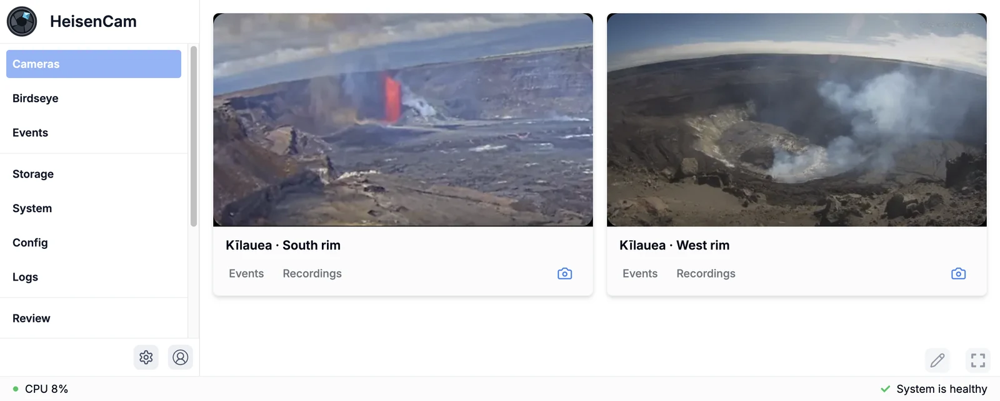

I saw who knocked
A classic dashboard for your cameras.
HeisenCam brings one-click event playback, local object detection and a replay benchmark to a recorder built on Frigate 0.18.3.
Run the Docker demo
Run it locally
The example includes both public-domain camera clips. Docker Compose starts the candidate on your own machine.
git clone --branch heisencam/0.18.3 https://github.com/kzkvv/heisencam.git
cd heisencam/examples/demo
docker compose up -dOpen http://127.0.0.1:8972 in your browser.